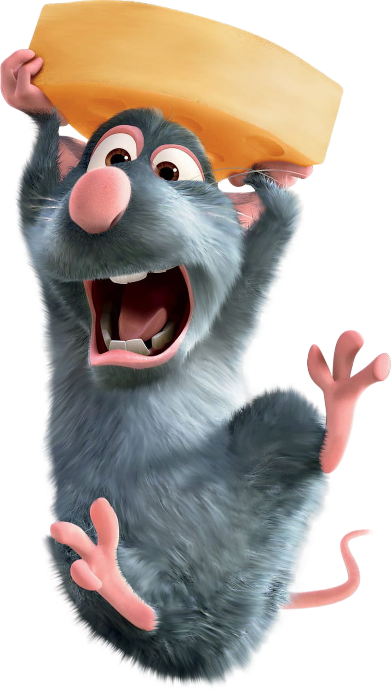
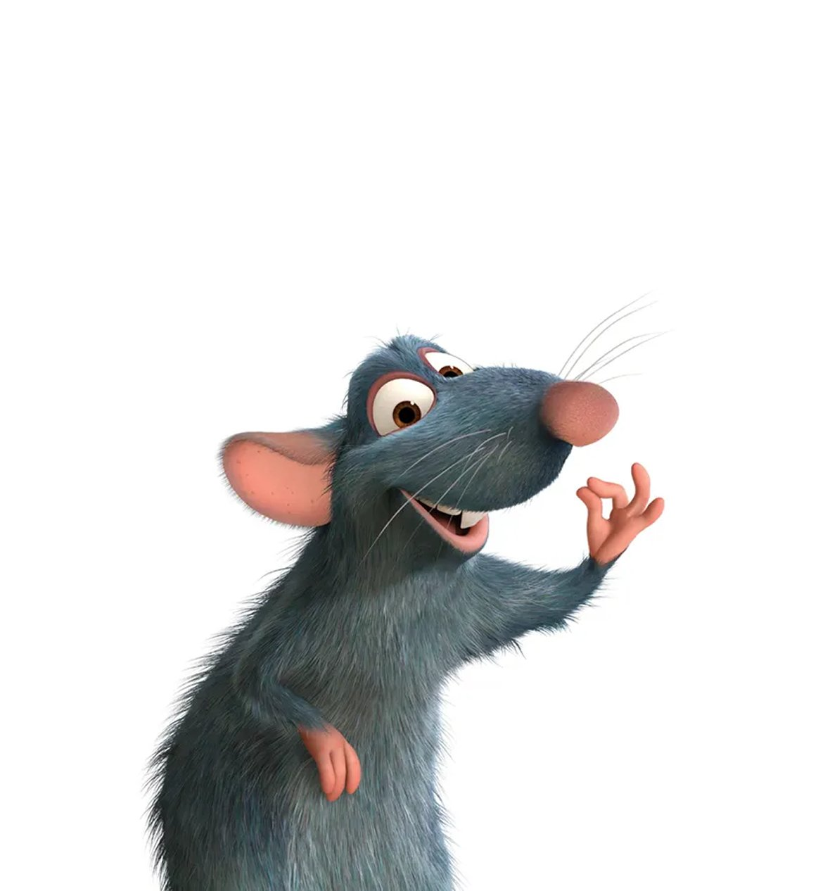
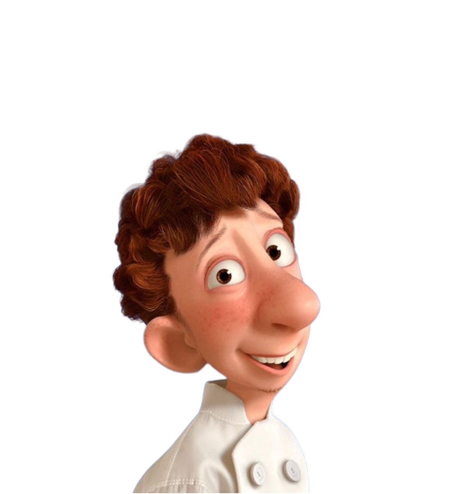
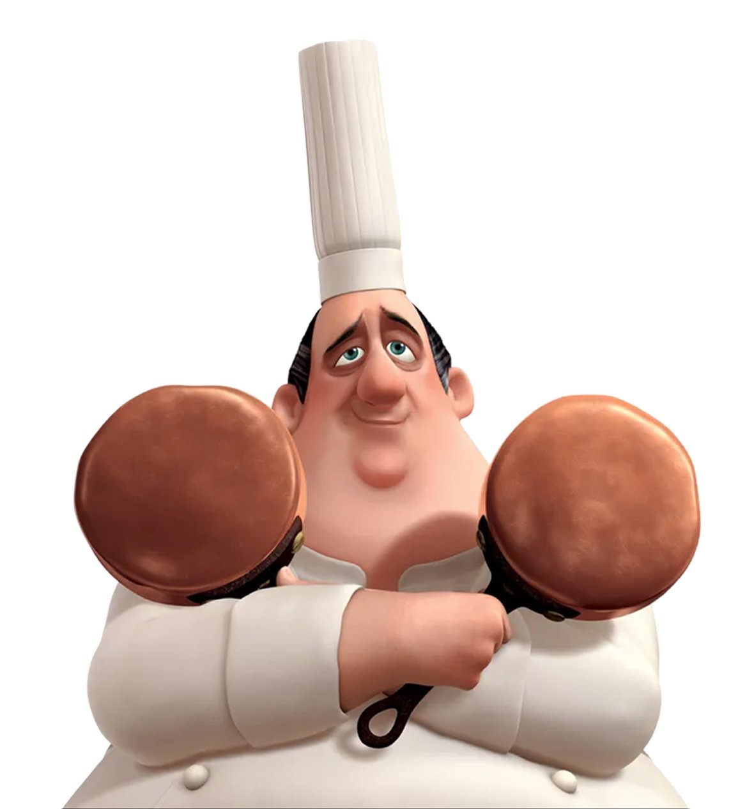
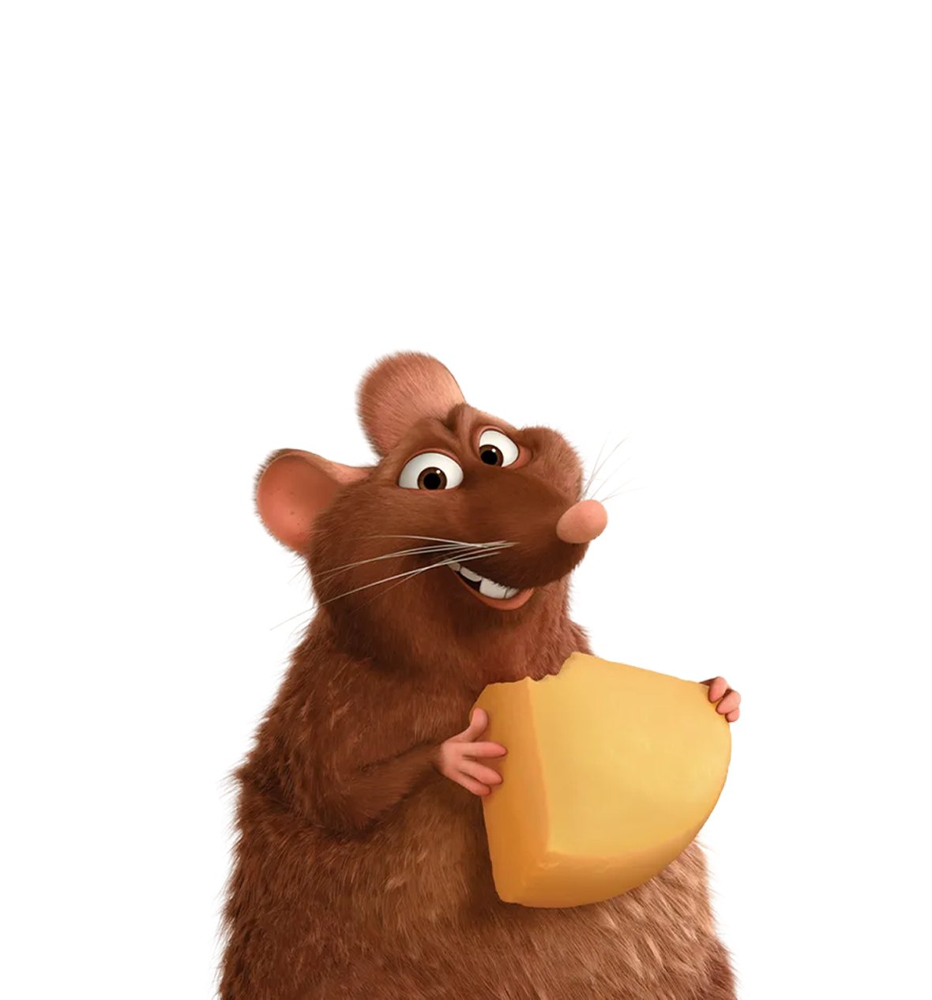

★누구나 요리할 수 있다★
Remy · 파리의 요리사를 꿈꾸는 쥐


Remy
레미 · 꼬마 방장
후각과 미각이 예민하고 머리도 비상해 영리한 쥐로, 책도 읽고 사람의 말도 알아듣는다. 누구보다도 호기심과 탐구욕이 강하며, 쥐이면서도 미식을 추구해 요리 실력뿐만 아니라 요리사의 필수 조건인 순발력과 실행력도 최상급이다. 이 작품의 주제인 "누구나 요리할 수 있다."를 대변하는 캐릭터다. 링귀니에게는 꼬마 방장(Little Chef)이라고 불린다.
쥐라는 신분의 한계에도 불구하고 최고의 요리사가 되겠다는 꿈을 절대 포기하지 않아요.
냄새와 맛에 대한 탁월한 감각을 타고났고, 재료의 조합을 직관적으로 파악하는 섬세함이 있어요.
거짓이나 편법보다 진심 어린 방식으로 인정받고 싶어 하고, 옳고 그름에 대한 뚜렷한 기준을 가지고 있어요.
두려움과 편견 앞에서도 자신이 믿는 것을 위해 행동으로 나서는 담대함을 가지고 있어요.

Alfredo Linguini
알프레도 링귀니
링귀니는 소심하지만 마음씨 착한 청년으로, 구스토 레스토랑의 신입 청소부예요. 여러 번의 실패를 겪은 끝에 이 일자리만큼은 꼭 지켜내고 싶어 하고, 이것이 자신의 마지막 기회라고 생각해요. 레미와의 우연한 만남은 링귀니를 매우 독특한 '유령 요리' 관계로 이끄는데, 그는 레미의 요리 실력을 위한 어설픈 몸 역할을 담당하게 돼요. 레미의 음식이 점점 더 주목을 받으면서, 두 사람은 갈수록 강해지는 외부의 시선을 감당해야 해요. 하지만 링귀니에게는 새로운 멘토 콜레트와 함께하는 시간이 그 모든 스트레스를 그나마 견딜 수 있게 해줘요.

Auguste Gusteau
오귀스트 구스토
고(故) 오귀스트 구스토는 프랑스 역사상 가장 위대한 요리 천재로, 레미가 요리사의 꿈을 품게 만든 요리책 《누구든 요리할 수 있다》의 저자예요. 파리에 있는 구스토의 레스토랑은 그의 독창적인 비전과 탁월한 조리 실력 덕분에 명소로 자리잡았는데, 그 요리들은 프랑스 전통 요리를 존중하면서도 자유롭게 재해석한 것이었어요. 구스토는 음식 평론가 안톤 에고에 의해 레스토랑이 별 다섯 개에서 네 개로 강등된 직후 갑작스럽게 세상을 떠났지만, 그의 정신은 레시피 속에, 그리고 레미의 상상 속에 살아 숨쉬고 있어요.

Emile
에밀
에밀은 레미의 남동생으로, 전형적인 쥐다운 쥐예요. 약간 통통한 체형에 낙천적인 성격을 가진 그는 먹을 수 있는 것이든 없는 것이든 가리지 않고 음식을 사랑하며 삶 자체를 즐겨요. 형이 좋은 음식에 집착하는 이유를 항상 이해하지는 못하지만, 레미가 엉뚱한 모험을 떠날 때면 언제든 기꺼이 함께하고, 기운이 없을 때는 늘 곁에서 응원해줘요.